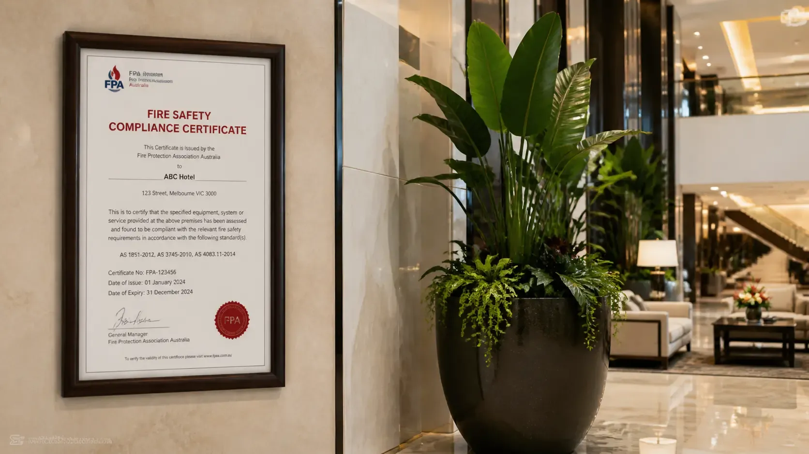
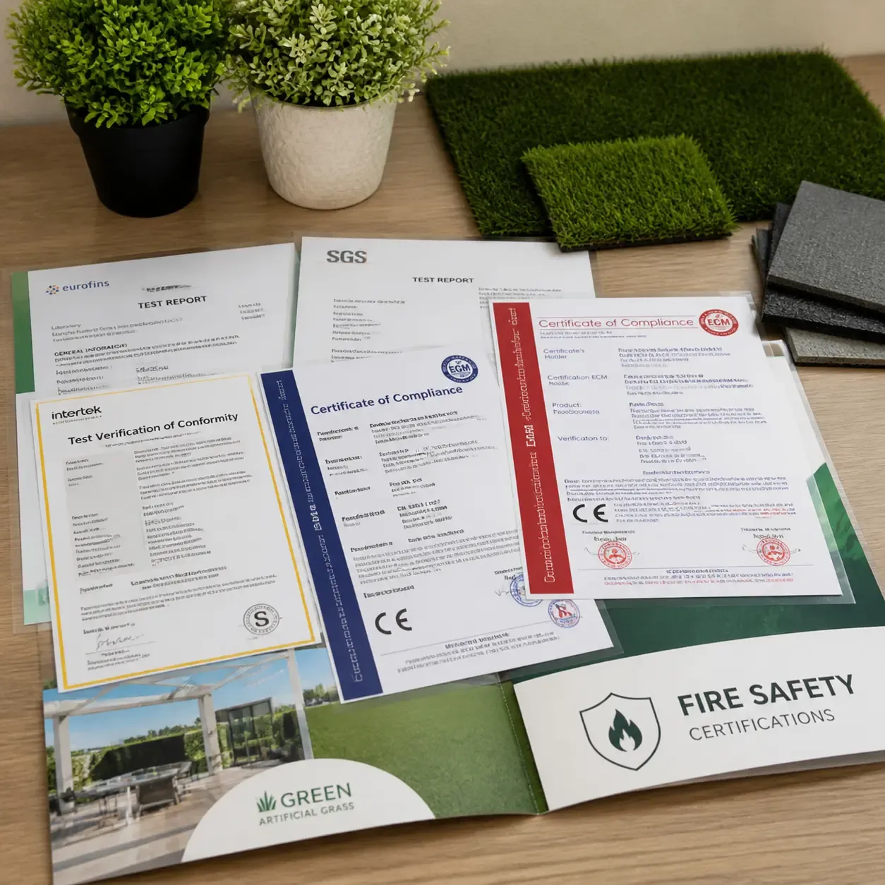
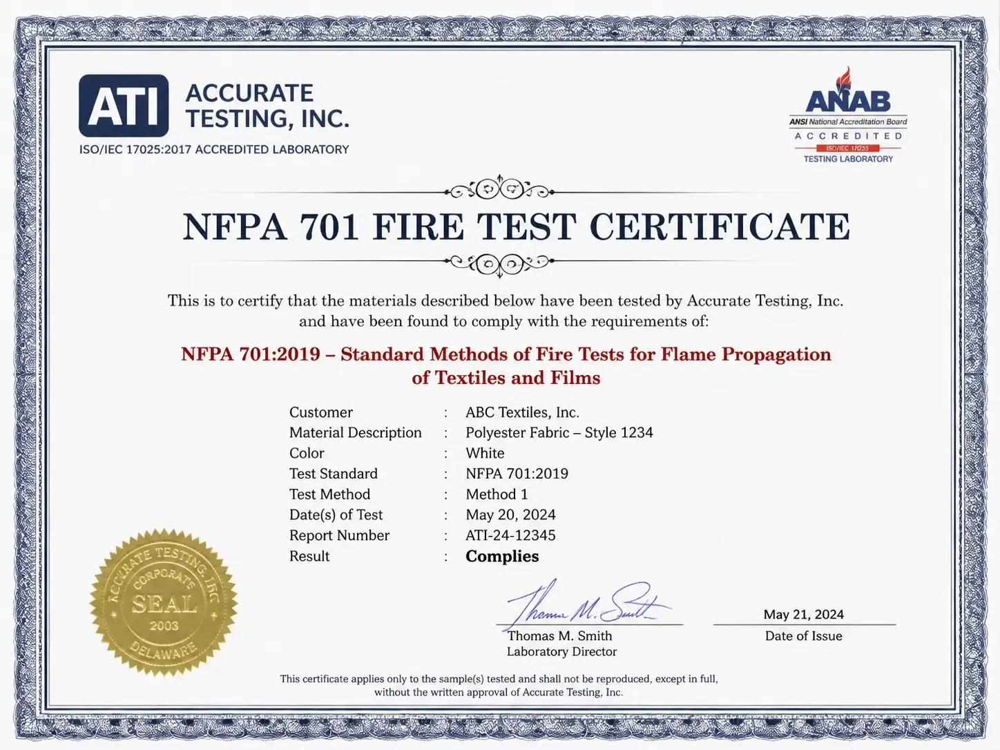
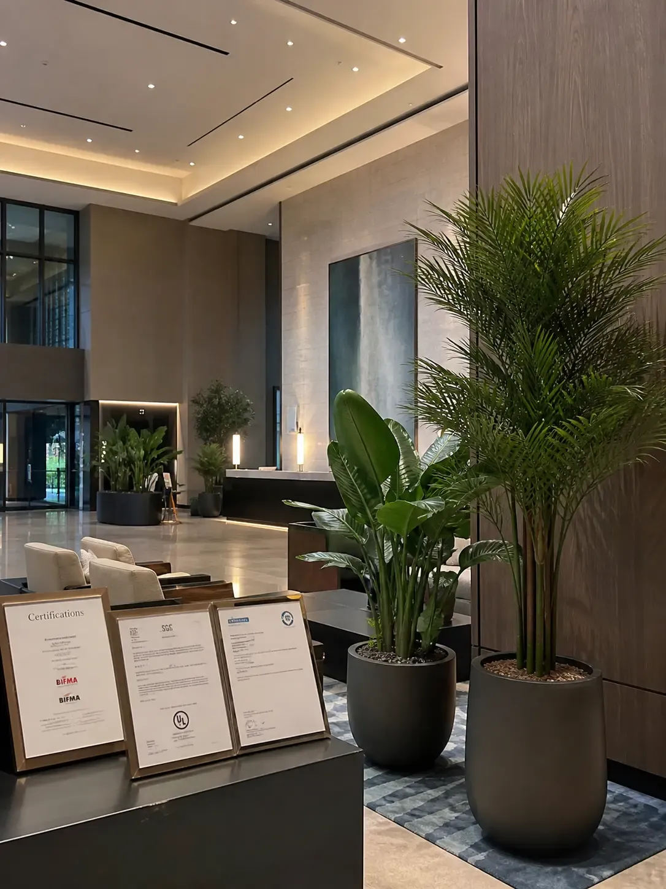

Are Artificial Plants Fire Safe for Commercial Buildings?

It's one of the most common questions we receive from hotel procurement managers, interior designers, and facilities directors: are artificial plants actually safe to use in a commercial building?
The short answer is yes — but only when the right products are specified. The longer answer involves understanding why the question exists in the first place, what fire safety standards apply, and how to verify that the plants you're specifying genuinely meet them.
This article covers all of it.
Why the Question Exists
Artificial plants are made primarily from synthetic polymers — most commonly polyethylene (PE) or polyvinyl chloride (PVC). Both materials are derived from petroleum, and in their untreated form, they are combustible. Expose an untreated artificial plant to a flame and it will burn.
This creates an obvious concern for commercial properties. Hotels, offices, restaurants, and retail spaces are all environments where large numbers of people congregate, where fire safety regulations are strictly enforced, and where the consequences of a fire can be catastrophic.
The good news is that this problem has a well-established engineering solution: fire retardant treatment. When properly applied — either as an additive blended into the polymer at manufacture or, less durably, as a surface treatment — fire retardants dramatically reduce the flammability of artificial plants, allowing them to meet the testing standards required for commercial use.
The risk lies in the gap between what the standard requires and what the market actually delivers. A significant proportion of artificial plants sold today are manufactured for residential use, where fire codes are less stringent and enforcement is rare. Those same products, when installed in a commercial property, can fail a fire inspection — often after the project is complete.
What Fire Safety Standards Apply?

The applicable standard depends on where your project is located. The most important ones for commercial artificial plants are:
- NFPA 701 (United States) — The National Fire Protection Association's standard for flame propagation of textiles and films. The most widely referenced US standard for decorative materials in commercial settings. Required by fire codes in most US states and enforced during routine commercial fire inspections. See our full NFPA 701 guide for a detailed breakdown.
- EN 13501 (European Union) — The European classification system for the reaction to fire performance of construction products. Class B or C is typically required for decorative materials in commercial properties across EU member states.
- GB 8624 B1 (China) — China's national fire-retardant standard. Required for commercial interiors under Chinese building codes and enforced during fire safety inspections by local authorities.
- BS 5867 Part 2 (United Kingdom) — The British standard for fabrics and related decorative materials. UK commercial projects may also reference EN 13501 post-Brexit depending on the project specification.
"A supplier who cannot provide the specific test certificate for the specific product you are ordering should be treated as non-compliant — regardless of what their marketing materials claim."
Commercial Grade vs. Residential Grade: A Critical Distinction
This is the single most important concept for anyone specifying artificial plants for a commercial project. There are effectively two markets operating in parallel:
Residential-grade artificial plants are designed for home use. They are manufactured at the lowest cost point, use basic PVC materials, and carry no fire retardant treatment or certification. They are entirely appropriate for their intended use. They are not appropriate for commercial buildings.
Commercial-grade artificial plants are engineered for regulated environments. They use fire-retardant PE or PVC compound, are batch-tested by accredited third-party laboratories, and come with formal test certificates. They cost more — typically significantly more — because the manufacturing process, materials, and certification carry real costs.
The problem is that both product types can look identical in a product photograph. A hotel designer sourcing plants from a general wholesale marketplace has no visual way to distinguish between a certified commercial product and an uncertified residential one. The difference only becomes apparent when you ask for the certificate — or when the fire inspector arrives.
What a Compliant Certificate Looks Like

A valid fire safety certificate for commercial artificial plants should include all of the following:
- Issuing laboratory name and accreditation number — The test must be performed by an accredited third-party lab, not self-certified by the manufacturer.
- Specific standard referenced — e.g., NFPA 701-2019. The exact edition matters; some jurisdictions specify which edition is current.
- Product identification — The certificate must identify the specific product or product line tested, not just "artificial plants" as a general category.
- Test results and pass/fail determination — The certificate should state clearly that the product passed the relevant test method.
- Issue date — Certificates should be current. An undated or decade-old certificate is unlikely to satisfy a diligent fire inspector.
If a supplier cannot provide a certificate meeting all five criteria for the specific product you are ordering, treat the product as non-compliant and source elsewhere.
What Happens During a Fire Inspection?
Commercial fire inspections vary by jurisdiction but typically follow a consistent pattern. The inspector will assess all decorative materials in common areas and high-occupancy spaces — including artificial plants, fabric installations, and wall coverings — and may request to see fire certification documentation on the spot.
If artificial plants cannot be verified as compliant, inspectors have the authority to issue a notice requiring immediate removal. In some jurisdictions, particularly for high-occupancy venues like hotels and event spaces, this can result in partial or full closure of the affected area pending remediation.
This is not a theoretical risk. We regularly hear from designers and procurement managers who have faced exactly this situation — often because plants were sourced from a supplier who claimed compliance verbally but could not produce documentation.
How LaySun Handles Fire Safety

Every LaySun product for commercial use is manufactured with a fire-retardant PE compound — the retardant is blended into the material during production, not applied as a surface spray. This is the industry best practice: integrated retardants cannot wear off with cleaning, UV exposure, or handling over time.
Batch testing is carried out by accredited third-party laboratories against the applicable standard for the destination market. When you place a commercial order with LaySun, test certificates are provided as standard — in the format required by fire inspectors in your jurisdiction — before your installation date.
We certify to:
- NFPA 701 (United States)
- EN 13501 (European Union)
- GB 8624 B1 (China)
- BS 5867 Part 2 (United Kingdom)
When requesting a quote, tell us your project location and we'll confirm which certification is required and include the documentation in your order pack.
The Bottom Line
Artificial plants are fire safe for commercial buildings — when they are genuinely commercial-grade products backed by valid third-party test certificates. The specification process is straightforward once you know what to ask for.
The risk is in treating fire certification as an afterthought or taking supplier claims at face value. Verify the certificate before you specify. If a supplier won't provide one, that is your answer.
LaySun provides NFPA 701, EN 13501, GB 8624 B1, and BS 5867 test certificates with all commercial orders. Request samples or a quote and we'll include full certification documentation from day one.
Need fire-certified artificial plants for your project?
Every LaySun product is fire-treated and supplied with certification documentation for US, EU, and international compliance.
Our Fire-Rating Process View Product Catalogue Request a Quote →